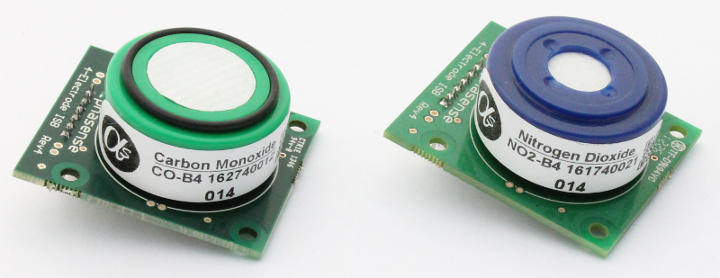
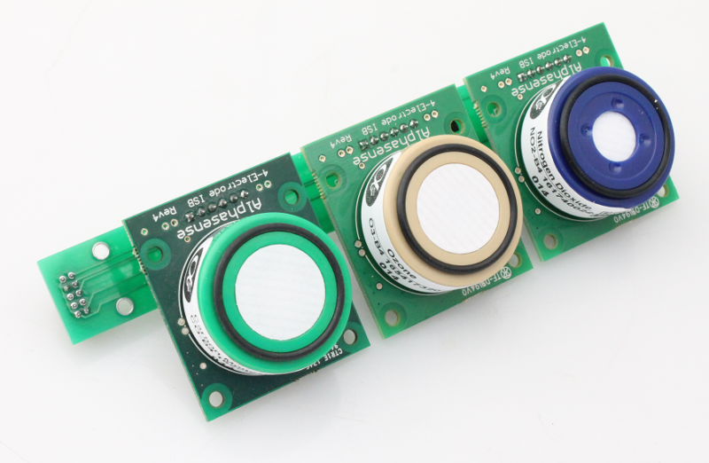
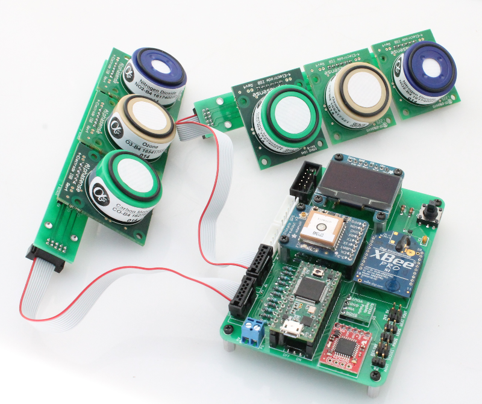

Alphasense Individual Sensor Boards (B4)¶

- These are the larger B4 size (32mm) Individual Sensor Board (ISB) from Alphasense
- Like the smaller A4 type, these are also available for measuring several gases including carbon monoxide, ozone, nitric oxide and more
- More information on the A4 air quality sensors can be found on the Alphasense website: http://www.alphasense.com/index.php/air/products/
Safecast ISB Adaptor Board¶
- Use the Safecast ISB Adaptor Board to connect up to 3 of the B4 sensors to the Safecast Air board
- ISB Adaptor Board also includes a temperature sensor

ISB Adaptor Board BOM¶
| Ref | Qty | Description | Vendor | Part # |
|---|---|---|---|---|
| P1 | 1 | Mini shrouded header, 5x2 | Digikey | S68KCACT-ND |
| P2,3,4 | 1 | Breakaway header, female, 36 pos | Digikey | 929974E-01-36-ND |
| C1,3,5 | 3 | 10 nF | Digikey | 399-9858-1-ND |
| C2,4,6,7 | 4 | 100 nF | Digikey | 399-4151-ND |
| U1 | 1 | Temperature Sensor | Digikey | TMP36GT9Z-ND |
Connecting to the Safecast Air Board¶
- Mount up to 3 of the sensors to the Safecast ISB Adaptor Board


- The Safecast Air Board includes two designated headers (P1 and P2) for the Alphasense air sensors.
- Using the same connector ribbon cable as described on the previous page, connect the ribbon cable to the back of the ISB Adaptor board and the P1 and/or P2 header on the Safecast Air Board.

